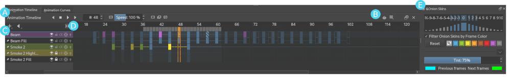

Animation Timeline Docker¶
The Animation Timeline Docker is at the heart of Krita's raster animation tools, providing everything you need to create, edit and preview traditional hand-drawn animations.
Overview¶
As shown in the image above, Krita's Animation Timeline Docker can be thought of as different sections:
Utilities -- The left side of the toolbar gives animators quick access to all of the widgets that are critical to their workflow; transport controls (previous, play/pause, stop and next buttons), a frame counter, preview controls (speed and drop frames), and buttons for quickly creating new frames and deleting unwanted ones.
Settings -- While all of the high-traffic controls are presented directly, the right end of the toolbar also contains buttons for opening submenus for things like Onion Skin Docker and settings that you can generally set and forget (for example: playback range, frame rate and autokey mode).
Layer List -- This area contains some subset of the layers of your current document. Similar to the 圖層, each layer has various properties that can also be toggled here (visibility, locking, onion skins, etc.). While the currently active layer is always shown here, layers can also be "pinned" to the timeline using the pin button to the left of each layer's name, the Pin to Timeline menu action, or the Pin Existing Layer submenu so they will be visible even when inactive.
小訣竅
Depending on your preference, newly created paint layers can start pinned or unpinned by setting the Automatically pin new layers to timeline option in Settings --> Configure Krita... --> General --> Miscellaneous.
- Active Layer:¶
The active layer is the layer that you're currently able to edit or draw on, shown as a highlighted row in the layer list. Clicking a layer within the layer list will make it the currently active layer.
- Layer Menu:¶
A small menu for manipulating animated layers at the top left of the layer list. You can create new layers, remove existing ones, as well as pin or unpin the active layer. (This menu also shows up when right-clicking on layer headers inside of the Layer List.)
- Audio Menu:¶
Another small menu at the top of the layer list for animating along with audio sources. This is also where you can open or close audio sources and control output volume/muting.
- Zoom Handle:¶
This special widget allows you to zoom in and out on the frame table, centered around the current frame time. Click-dragging from within the zoom handle controls the zoom level.
Frame Table -- The frame table is a large grid of cells which can either hold a single keyframe or be empty. Each row of the trame table represents an animated layer and each column represents a frame time. Just like the layer list, the active layer is highlighted across the entire frame table. For those who are familiar with pen-and-paper animation, you can think of the frame table as Krita's dope sheet or time sheet.
備註
It's important to understand that frame timings are not based on units of time like seconds, but on frames, which can then be played back at any speed, depending on the animation's frame rate and play speed settings.
Keyframes can be moved around the timeline by left-clicking and dragging from one slot to another, even across layers. Furthermore, holding the Ctrl key while dragging creates a copy, and holding the Alt key while dragging creates a clone frame. Finally, right-clicking anywhere in the frame table will bring up a context menu for adding, removing, copying, pasting or adjusting timing.
- Active Keyframe¶
Right now, it's only possible to view and draw on one keyframe at a time. This is known as the active keyframe, and is represented on the frame table as a block filled with diagonal stripes. Often, in simple animations, the active keyframe will be the frame on the active layer that is on or just before the current time. However, if the active keyframe has one or more clone frames all drawing, painting and editing will also affect all of its clones.
- Clone frames¶
A clone frame is of a keyframe is a reference to that keyframe at a different position. Clone frames share the exact same image data under the hood, and will have the same diagonal markings as the active frame when an active frame with clone frames is selected.
- Duplicate keyframe¶
Not to be confused with Clone Frames, a duplicate frame is merely the Active Keyframe copied and pasted as a separate Keyframe. Where clone frames will automatically duplicate the changes you make to them to each cloned frame, a duplicated frame is just another keyframe that happens to have the same content as the source.
- Current Selection¶
Frames highlighted in orange represent a selection or multiple selections. While multiple frames are selected, right-clicking anywhere in the frame table will bring up a context menu that will allow for adding and removing keyframes or holds within the current selection. It's also possible to have multiple separate (non-contiguous) selections if needed.
警告
Painting always happens only on the active keyframe, which is not necessarily part of your current selection on the timeline!
- Keyframe¶
In Krita, we call the images that make up your animation keyframes. Each keyframe can also be assigned a Color Label, as a matter of personal organization and workflow.
- Blank Keyframe¶
Within the frame table, keyframes that contain drawings are displayed as filled blocks within a cell, while a blank keyframe is shown as a hollow outline. Unlike some other tools, Krita automatically holds each keyframe until the next keyframe on that layer; these holds are shown as a colored line that's drawn across all held frames.
- Frame Timing Header¶
The frame timing header is a ruler at the top of the frame table. This header is divided into small notched sections which are based on the current frame rate (set in the animation settings submenu at the right end of the toolbar). While each frame is marked with a single line, each second is marked by a subtle double-line. Major notches are also marked by a frame number.
- Cached Frames¶
The frame timing header also shows important information about which frames are currently cached. When something is said to be "cached", that means that it is stored in your device's working memory (RAM) for extra fast access. Cached frames are shown by the header with a small light-gray rectangle in each column. While this information isn't always critical for us artists, it's helpful to know that Krita is working behind the curtains to cache our animation frames for the smoothest possible experience when scrubbing through or playing back your animation.
- Current Time Scrubber:¶
A highlighted column in the frame table which controls the current frame time and, as such, what is currently displayed in the viewport.
- Zoomable Scrollbar¶
Not only can the scrollbars on the Animation Timeline Docker be used to pan the frame table by dragging left and right, it can also be used to quickly zoom in and out by dragging up and down. Pan and zoom in one flick of a wrist!
Onion Skins Docker -- While technically a separate docker, the Onion Skin Docker is used in conjunction with the Animation Timeline docker to help animators see how their animation changes between neighboring keyframes. The onion skins menu button on the Animation Timeline Docker can be used to quickly toggle the visibility of the Onion Skins Docker.
Animating¶
In order to begin animating with Krita, we first need to turn our paint layer into an animated layer by adding our first keyframe. In our case we will start with a blank keyframe, but if you've already drawn something on the paint layer and would like to transfer it to your new keyframe you can create a duplicate keyframe instead.
To make a new, blank keyframe,  any square on the timeline docker and select Create Blank Frame. A blank frame (one that you haven't yet drawn anything in) appears as a hollow outline instead of a solid box, making that frame active and drawing on the canvas will make it appear as a solid, colored rectangle. To move a keyframe around, you can drag and drop it into another empty frame slot, even across animation layers.
any square on the timeline docker and select Create Blank Frame. A blank frame (one that you haven't yet drawn anything in) appears as a hollow outline instead of a solid box, making that frame active and drawing on the canvas will make it appear as a solid, colored rectangle. To move a keyframe around, you can drag and drop it into another empty frame slot, even across animation layers.
The currently selected layer will automatically be shown on the timeline. However, while animating you may find that you want to keep another layer "pinned", making it visible in the Animation Timeline Docker regardless of which layer is selected. There are a few ways to do this in Krita, but it doesn't get any simpler than clicking on the little pushpin icon next to the layer's name.
It's not much of an animation with only one frame, so to add another new frame you can do the same thing we did last time by selecting Create Blank Frame from the right-click menu or by double-clicking on a particular frame slot. For the sake of this lesson, however, we will mix it up by creating a duplicate keyframe by scrubbing to a different time and click the Create Duplicate Keyframe button on toolbar at the top of the Animation Timeline Docker.
As you can see, there are quick a few convenient ways to add or remove keyframes from your animation in Krita, depending on your personal preference, input devices and workflow!
Now that we have more than one keyframe, we can do different drawings in each and play back our simple animation by clicking on the Play/Pause button on the toolbar at the top of the docker. Another crucial technique for animating is manually switching between frames at your own pace to inspect the frame-by-frame movement of your animation as you work, also known as "scrubbing". Like everything else, we've made sure that there are a few different ways to scrub through you animation, but one of my favorites is to simply click and drag between different times on the Frame Timing Header at the top of the frame table.
I know that's a lot of info to digest, but all you really need to know to get started is how to create new keyframes and scrub through your animation to check your progress. From there, all that's left is the hard but rewarding work of drawing lots and lots (and lots) of animation frames!
Tips¶
There are a couple subtle features built into the docker's transport controls that you might find useful. For example, clicking the stop button while your animation is playing will jump back to whatever frame you started playing from, and clicking it again when your animation is not playing will jump back to the first frame of your animation. Similarly, the next keyframe button will jump the selection to the next available keyframe on the active layer, but if there is no next keyframe on that layer it will use the timing of your animation to estimate where you may want to place your next keyframe, and jump to that position. While a bit advanced, nuances like this mean that the Animation Timeline Docker's buttons (and keybind-able actions) almost always do something useful for animators.
It's possible to add multiple keyframes by right-clicking inside the frame table and selecting . With this option you can specify the number of frames to add with the option of built in timing for quickly creating a series of 1s, 2s, 3s, etc. These settings are saved between uses.
You can also change the color of keyframes within the frame table so that you can easily identify important frames or distinguish between different sections of your animation. The current color selection is remembered for new frames so that you can easily make a set of colored frames and then switch to another color. (By the way, it's even possible to quickly jump between frames of the same color by assigning a keyboard shortcut to Previous/Next Matching Keyframe.)
Clicking with
within the Frame Timing Header instead of the frame table gives you access to a few more option which allow you to add or remove entire columns of frames or holds at a time, as well as reset your animation cache if needed. For example, selecting will add new frames to each layer that's currently visible in the Timeline Docker.
To delete frames,
the frame and press Remove Keyframe. This will delete all selected frames. Similarly, selecting Remove Frame and Pull will delete the selected frames and pull or shift all subsequent frames back/left as much as possible.
Controls¶
Layer List
 : Select active layer.
: Select active layer.- : Layers Menu (add/remove/show layers, etc.).
-
- : Move to time and select frame of the active layer.
- + drag : Scrub through time and select frame of the active layer.
- : Frame Columns Menu (insert/remove/copy/paste columns and hold columns).
Frames Table
- : Selects a single frame or slot and switches time, but does not switch active layer.
Space +
: Pan.Space +
: Zoom.
Frames Table (On Empty Slot).
- : Frames menu (insert/copy/paste frames and insert/remove holds).
- + drag : Select multiple frames and switch time to the last selected, but does not switch active layer.
Shift +
: Select all frames between the active and the clicked frame.Ctrl +
: Select individual frames together. click + drag them into place.
Frames Table (On Existing Frame)
- : Frames menu (remove/copy/paste frames and insert/remove holds).
- + drag : Move a frame or multiple frames.
Ctrl +
+ drag : Copy a frame or multiple frames.Alt +
+ drag : Clone a frame or multiple frames.Shift +
+ drag : Move selected frame(s) and all the frames to the right of it. (This is useful for when you need to clear up some space in your animation, but don't want to select all the frames to the right of a particular frame!)